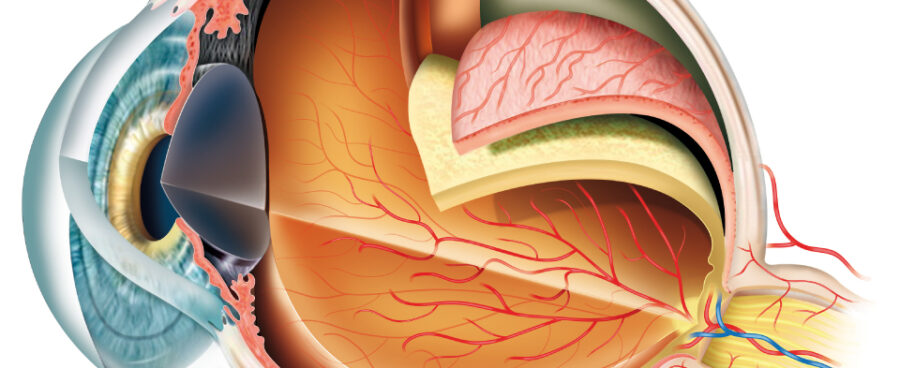
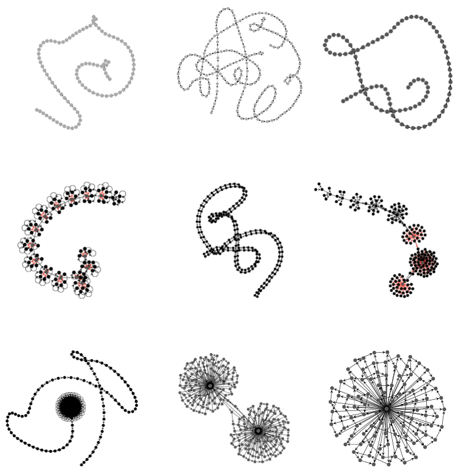

Growing reservoir computers
What distinguishes life from non-living matter? Until the late 19th century, scientists believed that life possessed a special vital force. A property not just of living beings, but of their chemical constituents themselves. By the mid-20th century, the discovery of DNA and RNA structures and the successful synthesis of polynucleotides revealed that life’s chemistry follows the same physical laws as everything else. The atoms that make up our bodies are the same as those found all around the universe. Yet, there remains something unique about living systems beyond chemistry alone. In recent years, researchers have turned to function as the defining feature of life.
What gives rise to function in multicellular organisms? Morphogenesis orchestrates how cells collectively form complex structures like eyes, limbs, and hearts.

In 2020, Mordvintsev et al. introduced Neural Cellular Automata (NCA) as a model of morphogenesis. By using neural networks as transition rules, NCAs can grow predefined two-dimensional shapes from a single-cell seed. However, biological morphogenesis is not just about form, it is about function. In nature, structures emerge to do something. What better function to explore than computation itself?
Developmental Graph Cellular Automata (DGCA) (Waldegrave et al., 2023) build upon NCAs by allowing the growth of directed graphs guided by fitness functions. Since recurrent neural networks (RNNs) are directed graphs, and reservoirs (at their simplest form) are RNNs, DGCAs bring us closer to systems that compute in ways reminiscent of nature.
Conventional reservoir computing relies on brute-force methods. RNNs are randomly initialized until the appropriate dynamics are found. The search is often done randomly or by novelty-based methods. This raises a compeling question:
Why not grow our own reservoirs? Achieving so represents a crucial step toward modeling a more functional, adaptive morphogenesis. If this intrigues you, read the paper. You’ll find that many of the resulting reservoirs exhibit sparse “life-like” structures rather than small-world reservoirs. This suggests that form may play a deeper role in computation within dynamical systems than previously imagined.
